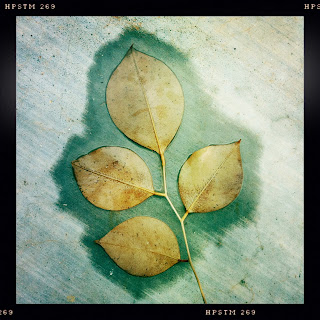

Recovered weblog entry
After the rain has fallen

A weekend full of rain, wind, and colder temperatures is over, and we're left to pick up the mess. The John S lens is my favorite effect. I promise to try and go light on its use from here on out. Back to work tomorrow! Lens: John S
Film: Pistil